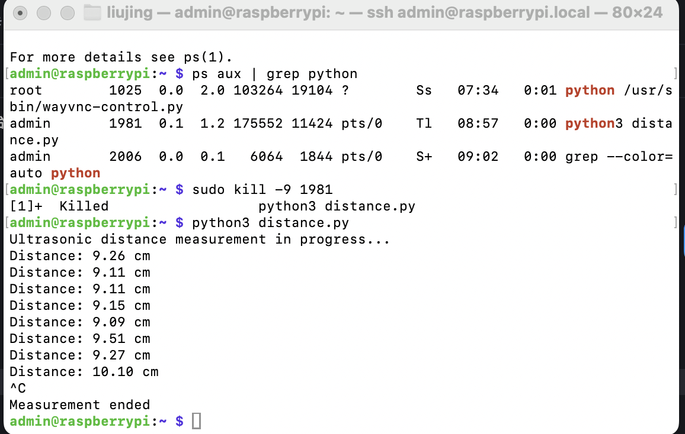

超声波
蝙蝠发射超声波，遇到目标后产生回波。通过分析回波时间和强度，可以精确判断目标位置。

什么是超声波？
超声波是一种电磁波，它能通过空气传播并在遇到障碍物时反射回来。具有方向性好、穿透能力强等特性。
人类可以听到每秒振动约20次（低沉的隆隆声）至每秒20,000次（高音调的哨声）的声波。那么，频率超过20,000Hz的声波就是超声波，超出了人类听觉上限。
超声波频率范围频谱

Raspberry Pi GPIO教程-超声波传感器
HC-SR04硬件概述

HC-SR04超声波距离传感器实际上由两个超声波换能器(Transducer)组成。一个用作发射器，将电信号转换为40KHz超声波脉冲。另一个用作接收器，监听发射的脉冲。
该传感器可提供2厘米至400厘米之间出色的非接触式范围检测，精度为3毫米。
由于它采用5伏电压运行，因此可以直接连接到Raspberry Pi或其他5V的逻辑微控制器。
技术规格
| 操作电压 | DC 5V |
|---|---|
| 操作电流 | 15mA |
| 操作频率 | 40KHz |
| 最大检测范围 | 4m |
| 最小检测范围 | 2cm |
| 精度 | 3mm |
| 量测角度 | 15 degree |
| 触发输入信号 | 10µS TTL pulse |
| 尺寸 | 45 x 20 x 15mm |
HC-SR04超声波传感器引脚

VCC —— 为HC-SR04超声波传感器供电。将其连接到Raspberry Pi的5V输出。
Trig —— 接收外部触发信号来启动超声波发射。程序通过将此引脚设置为高电平10µs，传感器将启动超声波脉冲。
Echo —— 输出回声信号。当传感器发出超声波时，传感器会通过echo引脚输出一个高电平信号。其持续时间就是超声波往返的时间，通过测量这个时间，就能计算出传感器与障碍物之间的距离。
GND —— 接地引脚。可以将其连接到Raspberry Pi的接地。
HC-SR04超声波距离传感器如何工作？
当触发引脚设置为高电平10µs时，一切就开始了。作为响应，传感器以40kHz的频率发射八个脉冲的超声波脉冲。这种8脉冲模式经过特殊设计，以便接收器能够区分发射脉冲和环境超声波噪声。
这八个超声波脉冲发射完成后。模块会立即通过echo引脚输出高电平，并持续保持。直到超声波遇到障碍物并返回被接收器检测到，这是echo引脚改为输出低电平。
因此，echo 引脚的高电平持续时间（记为 Δt）等于 超声波从发射到返回的总时间（即往返时间）。
距离计算公式
距离 = (Δt × 声速) / 2
（声速按 343m/s 计算，即 34300 cm/s，除以 2 是因为超声波往返一次）。

如果这些脉冲没有被反射回来，回波信号就会超时并在38ms（38毫秒）后变低。因此，38ms的脉冲表示传感器范围内没有障碍物。

HC - SR04 超声波传感器最大检测距离约为 4 米。已知声音在空气中传播速度约为 343 米 / 秒。
超声波从传感器发射出去，碰到 4 米处的障碍物再反射回传感器，经过的路程是米（往返距离） 。根据公式，可得传播时间秒，换算成毫秒约为 23.3ms。
考虑一定余量以及其他因素，通常取 38ms 作为超时时间。即如果在 38ms 内没有接收到回波信号，就认为传感器范围内没有障碍物 。
- 声速与温度相关，在标准大气压下，温度越高，声速越快 。
- 传感器内部电路在发射和接收超声波信号时，存在一定的延迟
- 实际应用环境中存在各种电磁干扰、声波反射干扰以及传感器安装方式和角度不同。超声波可能经过多次反射才被接收。
接线方法
将HC-SR04连接到Pi非常简单。将VCC引脚连接到Pi的5V引脚，将GND引脚连接到接地引脚。现在将触发和回声引脚分别连接到GPIO引脚23和24。


超声波测距原理

超声波测距流程图

超声波关键代码块

超声波测距代码（带超时验证及异常处理）
输入以下代码：
def measure(self):
"""Execute distance measurement"""
try:
# Send trigger signal
GPIO.output(self.trigger_pin, GPIO.HIGH)
time.sleep(0.00001) # 10μs pulse
GPIO.output(self.trigger_pin, GPIO.LOW)
t0 = time.time()
# Wait for echo to go out
while GPIO.input(self.echo_pin) == 0:
if time.time() - t0 > 0.038:
return float('inf')
# Record emission time
t1 = time.time()
# Wait for echo to return
while GPIO.input(self.echo_pin) == 1:
if time.time() - t0 > 0.038:
return float('inf')
t2 = time.time()
# Calculate distance
return (t2 - t1) * 34300 / 2 # Unit: centimeters
except Exception as e:
print(f"[ERROR] Measurement failed @ {time.strftime('%Y-%m-%d %H:%M:%S')}: {str(e)}")
return None
代码运行
- ssh admin@raspberrypi.local
- nano distance.py （粘贴代码到文件中）
- 保存退出：Ctrl + O → Enter → Ctrl + X
- python3 distance.py
- Ctrl + C 退出
有哪些局限性？
HC-SR04超声波传感器在精度和整体可用性方面确实非常出色，尤其是与其他低成本超声波传感器相比。这并不意味着HC-SR04传感器将会一直很好地工作。下图显示了HC-SR04的一些局限性：
- 传感器与物体/障碍物之间的距离大于4米(13ft)。

- 物体的反射面角度较小，因此声音不会反射回传感器。

- 物体太小，无法将足够多的声音反射回传感器。另外，如果您的HC-SR04传感器安装在设备上较低位置，则可能接收到从地板反射的声音。

- 一些表面柔软、不规则的物体（例如毛绒动物）会吸收声音而不是反射声音，因此HC-SR04传感器可能难以检测到此类物体。

GPIO busy解决方法
1 切记control+c退出，不要control+z （只是暂时前台退出，后台还在占用端口）
2 取消占用方法：
-
查看所有Python进程
ps aux | grep python -
强制终止所有残留进程
sudo kill -9 PID # 根据实际进程ID操作 -
清除所有GPIO占用状态
sudo gpio unexportall # 清理GPIO状态
